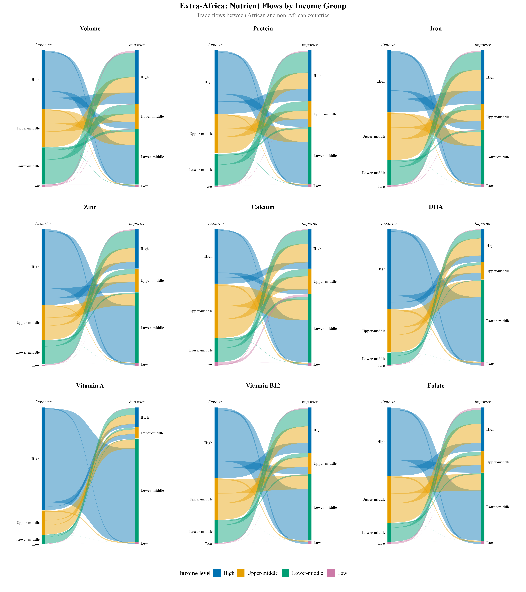
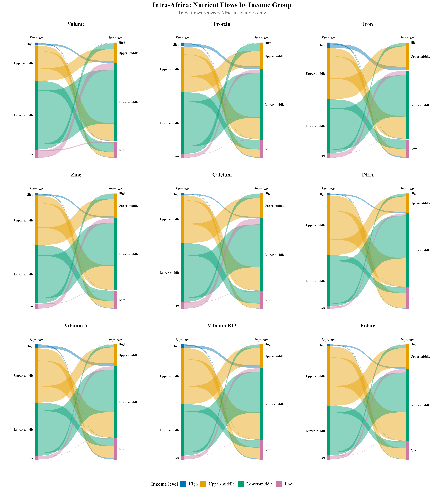

Africa’s Seafood Trade & Nutrient Flows
R
Trade economics
Fisheries
Nutrition
Africa
ARTIS
A first look at how nutrients embedded in Africa’s seafood trade move between income groups, and which countries are net importers vs exporters.
Warning
This is an active working paper. Figures below are preliminary and the full analysis is not yet public.
Which countries are net importers vs exporters
Pick a nutrient to see each country’s trade position, ranked relative to other African countries rather than by absolute quantity (green = net exporter, red = net importer):
Note
Categories are relative quintiles (each country’s rank against other African countries), not raw trade values — deliberately coarser than the full analysis, which stays with the working paper for now.
Overview
Species-level bilateral seafood trade data lets each shipment be converted into flows of protein, iron, zinc, calcium, and omega-3 fatty acids (DHA, EPA), not just tonnage. This is a preliminary look at where those nutrients actually go, split by World Bank income group and by whether trade stays within Africa or crosses into the rest of the world.
Nutrient flows by income group
Trade with the rest of the world (left) looks very different from trade within Africa (right). Ribbon width is proportional to nutrient volume; color denotes the exporting income group.


Data
Built from species-level bilateral trade data merged with a nutrient-content crosswalk and World Bank income classifications. Full data and methods documentation to follow with the working paper.